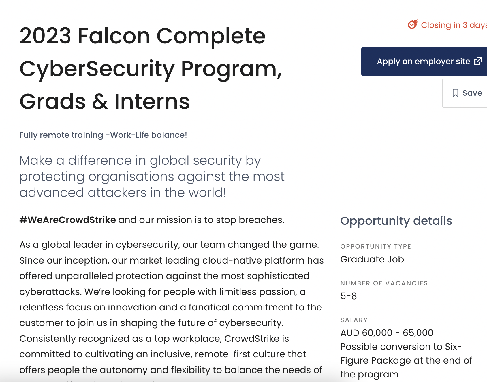
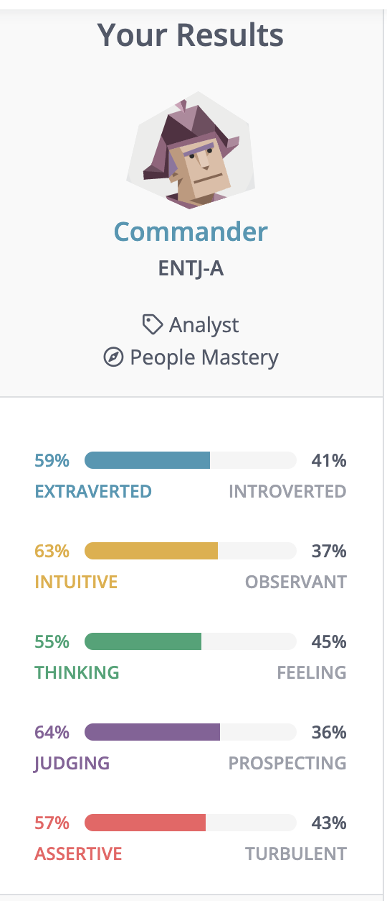
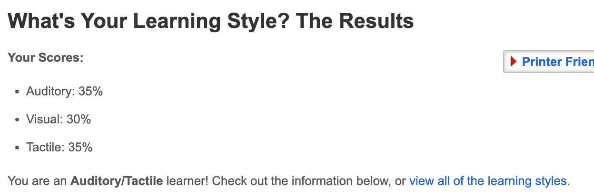
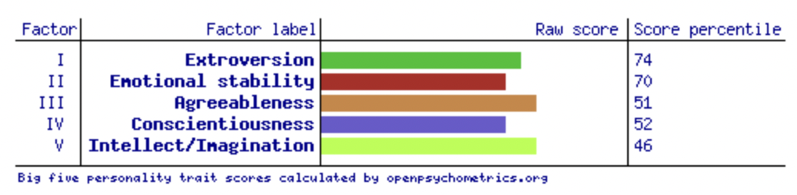

My Profile
Introduction
I was born and raised in Bendigo, which is located in Victoria, Australia. This is also where my Dad is from, but my Mum is from the North Island of New Zealand which was great growing up as I was able to travel between the two countries many times. I graduated high school in 2011 from Catholic College Bendigo where I moved onto university in Ballarat but at the time it was not for me. After this I worked in the Finance and Real Estate industry for a few years in Bendigo and Melbourne. After wanting to travel I chose to move overseas to Japan where I lived for around 4 years, mainly teaching English but also working at a ski resort for a time and learning to snowboard. This brings me to where I've decided to study again to gain and grow skills in IT. In my spare time I like to enjoy scifi and fantasy tv shows, movies and books (especially star wars). I also follow the st kilda football club and sadly this year was also not our year.
Interest in IT
IT became interesting to me during my time in Japan but computers in general have been a hobby of mine for many years. Living in Tokyo I met and made friends with many software engineers and other people with an IT background and hearing them talk about their experiences really piqued my interest. Starting with nothing and building a feature for an application or hearing about how they fixed a problem that was troubling them sounded very fun and challenging. Also the freedom that working in IT offers is a great perk. Furthermore, the future of everything is IT and that it can be done anywhere there is an internet connection really appeals to me as I would like to continue travelling and the IT industry would allow this to happen easier.
RMIT was a very simple choice for me. The institution allows me to study remotely as I have limited free time and would be unable to go to campus. The university is also very well known and looks good for future employment. Lastly it's also in Australia so there are no language barriers.
During my studies I hope to gain a great foundation I can further build upon in the workforce. I would like to gain an intimate knowledge of the industry so I can get an idea of the exact IT path I would like to take. Also I would like to learn the tools, like coding languages or programs needed to apply things to the real world.
Ideal Job
https://gradaustralia.com.au/graduate-employers/crowdstrike/jobs-internships/2022-falcon-complete-cybersecurity-program-grads-interns

The position at crowdstrike in their cyber security graduate program looks very interesting to me. Firstly, working in cyber security sounds exciting and challenging. Being able to react to new situations and find solutions to complex problems sounds like something that would keep me engaged in the work. Also having to monitor for incoming threats and respond to them accordingly would be a great way to get hands-on experience in the field. They also offer a lot of mentoring and development so I should be able to gain many skills while there.
The position chosen is a graduate program and as such I will have had to have just finished my bachelor's degree or be about to finish. As this is a program for fresh graduates there is no experience required but it would help if i had knowledge of the systems they use or processes in cyber security. The skills I would need that would best suit a position like this would be. Interpersonal skills as I would be working with other graduates and a mentor thus needing to be able to communicate with them effectively. Need an intimate knowledge of the systems commonly used in the IT industry so when I start I have a solid base to build from. Excellent problem solving and research skills so that when I come to problems I can navigate my way through the issue and if I am unable to do so have the skill to find a solution through my own research or through the help of a mentor or co-worker.
My level now is very low as I have had very little experience with IT but before undertaking this course I started a coding bootcamp to make sure I was interested in the field before committing to university study. In doing this I realised that I have an interest in the subject and an eagerness to know more. In saying that the first step to achieve this ideal graduate job would be to focus on graduating and receiving my bachelors degree. As the job is in cyber security I would tailor some aspects of my study on this and hopefully gain more knowledge on this aspect of IT. Alongside the degree there are many other small online courses, programs and events that help develop your IT skills and I could complete these while doing my University studies to further my skills in the area. This would hopefully make me stand out amongst other graduates and receive a position in the program.
Personal Profile
These tests are a great way for me to look at myself and assess my own strengths and weaknesses. I think it's good to know what aspects of myself need improvement and these tests give you a chance to be honest with yourself and decide what parts to focus on. With the results of the tests I agree that I am a very hands on person who likes to take charge during team exercises. I think that in a team I will work well with other individuals that like to be very active and practical about completing tasks but I may but heads with other people with leadership qualities. When I form a team I should look for people who are good team players and can work well with others. I know I can be stubborn but I need people who are willing to stand up to me and not just agree. Also with me being very hands on and methodical i should aim to pair with people who are more creative as i am not strong in this area.
- Myers Briggs test
- Learning styles test
- Big five personalities test



Project Idea
My project is a digital wallet. Basically it's an e-wallet which can do anything your physical wallet can do. Instead of needing to carry a wallet filled with cards and cash you just need this one application on your phone. You can charge it anywhere using your bank account or even charge it with cash at specific ATM’s. Very easy to use as it's all done through a QR or barcode. So when you're making a purchase or paying a bill they just scan your QR or barcode and the payment is made directly from the application. Furthermore to drive use we can partner with businesses and companies to have rewards programs and a points system so you're rewarded for using the system.
The motivation behind this comes from the trend that cash is declining in most areas in australia. But as most people bank with multiple institutions they still need to carry a wallet with many different cards. This would eliminate that by being able to charge through internet banking. As long as you can connect to the internet you can recharge your wallet. Furthermore the current pandemic and the need to keep distance between people this is a great way to have less contact when making physicat purchases. Nothing changed hands, you only have to scan a code and the payment is made. Additionally with how fast paced the large cities are you need a quick way to pay and be on your way. This also provides a solution.
This application will primarily be used on mobile phones as you always carry your phone with you and we would like to hopefully replace the wallet with this application. For starters you will have to attach a bank account to the application to charge it with money. Also we may be able to partner with ATMs to be able to charge it with physical cash but as we’re trying to replace cash this will not be a primary feature. The charging process should be instant so you will be able to use the service as soon as possible. Once charged with money you will be able to use it at any participating business that accepts the service. To use the application all you need to do is open the app and show your QR code or barcode to any business to scan and take payment from you. Businesses will be able to receive their money through their own versions of the application by simply scanning your code. Also for businesses and individuals you will be able to send the money inside the service back to an attached account. Not every business will sign up to the service or at least not straight away so we will add a map feature to the application so you can see where you can use the service at all times. There will also be a feature so you can send and receive money from friends you have on the application. Once you add a friend through your unique QR code you can request payments from them or send them money. The last large feature of the application will be the points and reward system for using the application and making payments through it. The points will be able to be exchanged for actual money that can be used in the application. These points can be earned by going to certain businesses we can partner with so customers are both driven to visit these businesses and use our service. Furthermore there will be a budgeting side to the application so you can accurately track your spending. This will have full breakdowns so you can see exactly where your money goes. This service will also add an extra layer of security to your money as instead of using you credit card to make purchases online where you can have your information stolen you will be able to use this instead. So instead of having your main account hacked and potentially losing lots of money you will only be risking what's inside your e-wallet. The risk will further be minimised as we will partner with high level security companies to make sure the money is safe. Simply put this will make it quicker to make purchases, make it so you don't need to carry so many daily items, keep your money secure and save money through the reward system.
To complete this project we will need to create a functional application from the ground up. This will require a front end, database, back end, cloud solutions and payment solutions. Luckily there are already many services we can add to our stack so we don't have to create all the code ourselves. An example of our stack would be the following python, flask, postgreSQL, AWS lambda, AWS DynamoDB, Codeship, Mambu API, CellCreit API, Gulp and Angular JS. using the following technologies we would be able to build a functioning application.
The first skill I would need to complete this would be to understand and use the languages and technologies listed above. As if I don't know how these work I will be very lost. Getting an understanding of all these languages and technologies would be a very difficult task as they are all complex and will take time to learn. I think it's best to have a general understanding on all aspects of what I want to achieve and work with other people who are highly skilled with each process. As I would work with others I think it's an important skill to be able to project manage. This would allow me to map out the whole process and make it happen. This last skill would be attainable after experience in the industry.
Once the project is completed i would like to think the following outcomes would come to fruition. Less purchases are made with cash or credit card as the application would be quicker and easier to use. Eliminate the need to carry your wallet with you all the time as you can just use your mobile phone to make purchases. As it is a safer option for online shopping we would like to see a reduction in the amount of people who get scammed online or have their credit cards hacked. Lastly, hopefully people have fun trying to find deals and gaining points through using the application instead of cash where using it is boring where we can make our application fun to use.
References
- Gradaustralia (2022), 2022-falcon-complete-cybersecurity-program-grads-interns, gradaustralia website, accessed 11 sep 2023. https://gradaustralia.com.au/graduate-employers/crowdstrike/jobs-internships/2022-falcon-complete-cybersecurity-program-grads-interns
- 16 personalities (2011-2022), entj-conclusion, 16 personalities website, accessed 15 sep 2023. https://www.16personalities.com/entj-conclusion
- Pennsylvania Higher Education Assistance Agency (2011-2022), learning styles quiz website, accessed 11 sep 2022, http://www.educationplanner.org/students/self-assessments/learning-styles-quiz.shtml?event=results&A=7&V=6&T=7
- Open source psychometrics (2019), big 5 personality test website, accessed 11 sep 2022, http://openpsychometrics.org/tests/IPIP-BFFM/results.php?r=3.6,3.4,3.8,3.4,3.8#_V
- Covid-19 is speeding up australia's shift towards a cashless future (2022), ABC news website, accessed 15 sep 2022, https://www.abc.net.au/news/2021-12-26/cashless-society-economy-australia-covid/100725728
- How to make a mobile wallet app in the digital money world (2021), CHI software website, accessed 16 sep 2022, https://chisoftware.medium.com/how-to-make-a-mobile-wallet-app-in-the-digital-money-world-cc9b0a00fa4